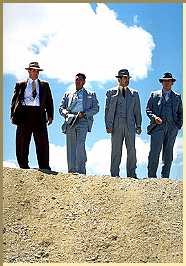

Contents | Features | Reviews | News | Archives | Store |
 |
|
| Movie Credits | Buy It! |
Mulholland Falls
Review by Carrie Gorringe
|  | Directed by Lee Tamahori. Starring Nick Nolte, Screenplay by Pete Dexter. |
In the opening scene of Mulholland Falls, a mobster from Chicago, about to take a short walk off a steep hillside, protests heartily to Detective Maxwell Hoover (Nolte) that this can’t be allowed to happen because "this is America", as if constitutional rights had always been of paramount importance in the Mob’s operations. Max heartily informs him, "This isn’t America, Jack. This is L.A." Whereupon the gangster’s downfall becomes manifest. Nolte and his three-man crew constitute the Hat Squad, an unofficial division specializing in justice dispensed according to frontier principles, which is to say, extralegally (a not-unheard-of concept in the L.A. Police Department of the 1950s, whose chief, William Parker, would become the mentor of Chief Darryl Gates, that bastion of racial tolerance and respector of civil rights). The squad, the moviegoer is informed, was constituted to prevent infiltration of the L.A. power structure by mob figures. But the crew, and Max in particular, will soon discover that, in the land of extralegal justice, there are much higher stakes, many of them of an entirely more personal character. While investigating the gruesome murder of a good-time girl named Allison Pond (Connolly), Hoover soon learns from a friend of hers, Jimmy Fields (McCarthy) that he and the lady were fond of capturing her more intimate moments with other men on 16 mm film.
Hoover’s investigations soon lead him to one Colonel Tibbs (Malkovich), who, in this story, is credited with inventing the H-Bomb. Colonel Tibbs has the mentality of the Cold War down pat. An epicene version of Dr. Strangelove crossed with Edward Teller (the "genius" behind the H-Bomb), Tibbs is a morally- and emotionally-detached individual, to say the least; he informs Nolte that it is "the cornerstone of civilization" that some people must die "before their time" so that others may live. As soon becomes clear, however, Hoover and Tibbs have much more in common than the practice of officially-sanctioned sociopathy and a weakness for trite aphorisms. Hoover will soon discover how much of an amateur he really is in under-the-table dealings, because his work is not informed by ideological passion, but it soon will be, especially when the, if one will pardon the expression, fallout from his investigations hits Max’s wife, Kay (Griffith) right in her blissful unconsciousness.
At the very least, Mulholland Falls has a most auspicious title, one very much in keeping with the tradition of depicting Los Angeles history as nothing more than a ponzi scheme of corruption -- a truthful assessment, as anyone familiar with the situation can attest. Screenwriter Robert Towne, in composing the script for the Polanski classic, Chinatown, borrowed liberally from the scandals that revolved around the successful efforts of Water Commissioner William Mulholland (and others) to bring water to an ever-expanding city from its inception in the early twentieth century, efforts which were always colored with a tinge or two or three of corruption. Thus, the film’s title is at once eponymous with the cinematic territory of neo-noir, but the title also symbolically connotes the relationship between Mulholland Falls and Chinatown: the two films share several elements, from the thematic motifs (among them, the obsessive pursuit of truth leading to personal ruin) right down to the gentle sepia tone that master cinematographer Haskell Wexler allows to waft into every scene to denote moral corruption or the portent thereof. There’s even a reference to water for good measure, as Max describes the concept of personal responsibility to his compatriot Harry Coolidge (Palminteri) as "carry[ing] your own water." One doesn’t even want to ask if evading personal responsibility is the equivalent of passing your own water, because the metaphorical implications for this film are truly irresistible.
Mulholland Falls is, at best and , at its heart, nothing more than a bloodless imitation of Chinatown. Unlike Carl Franklin’s Devil In A Blue Dress, which also reworked those same motifs, but did so from a previously unexplored point of view, Mulholland Falls has nothing unique to recommend it either thematically or visually; indeed, there is the uncomfortable impression of underlying fear exclusive of plot developments; while the film is playing at its self-conscious masquerade, it seems to be desperately hoping that no one will draw the obvious comparison between itself and its more distinguished predecessor. One might have expected better from director Tamahori, who skillfully delineated the interconnectedness of spousal abuse and racism in Once Were Warriors. Apparently, Tamahori doesn’t have the foggiest notion of the relationship between personal ambition and an extreme ideology, and the consequences that ensue in the political arena from this sinister combination.
By and large, the performances in Mulholland Falls don’t help the situation much. Nolte, Penn and Connolly are adequate to the task, but only just. Nolte’s acting style has always consisted less of emoting than of lumbering into the frame and filling it with an overbearing presence and gruff demeanor, and he conforms exactly to type here. Griffith’s role as the dutiful and long-suffering wife, pale in both appearance and spirit, is absolutely thankless, and she conducts herself accordingly, as the film rolls on to its unbearably obvious conclusion. Palminteri contributes a few brief sparks, when the script permits him to do so (thus leading to the question of when the very-talented Palminteri is going to straighten out his own act and choose scripts that are commensurate with said talent, instead of making junk like this and Diabolique), but the incessant psychobabble pouring from Coolidge’s mouth grates just as incessantly upon the audience’s nerves. Malkovich uses his role as an opportunity to perfect his quietly creepy persona, and it works very well. As Tibbs’ insanely-devoted bodyguard and factotum, Williams does nothing more than a straight version of Dr. Strangelove’s General Jack D. Ripper, and it is about as interesting as one might expect. The only real surprise in this film is the performance given by McCarthy, who breaks free from his former "Brat Pack" persona and is really able, in his brief role as Jimmy, to give some sense of the urgency surrounding this murder case. Fortunately for the film, the strength of McCarthy’s performance lingers long enough to give the film some degree of inspiration, but, after a couple of futile hours of Mulholland Falls, it’s obvious that the gangster in the opening sequence isn’t the only person in this film to have taken a fall.
Contents | Features | Reviews | News | Archives | Store
Copyright © 1999 by Nitrate Productions, Inc. All Rights Reserved.